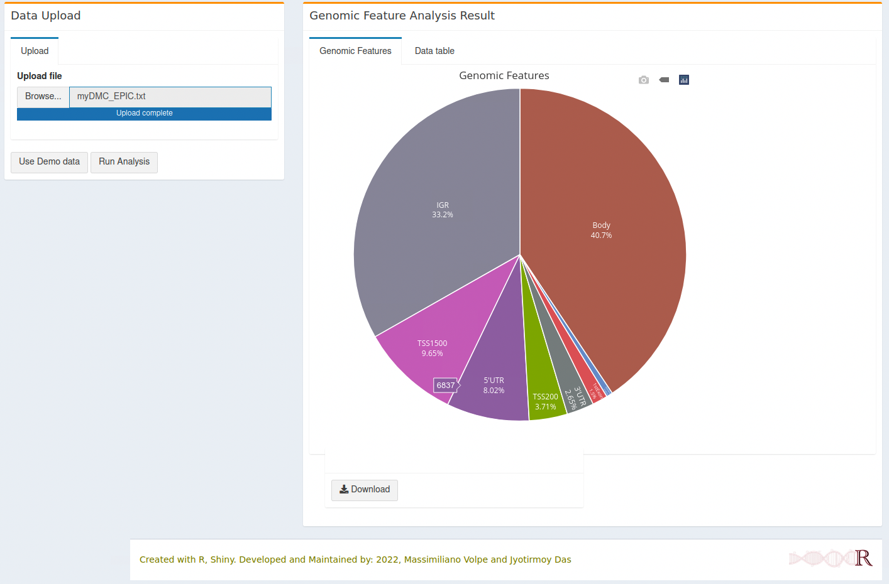
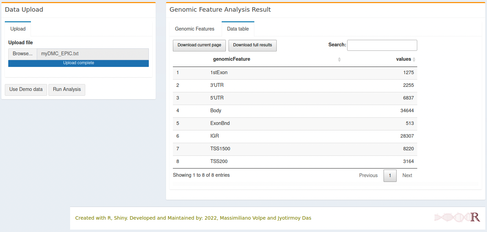

Gene Features analysis
Contents
3. Gene Features analysis¶
Gene Features, here we presented only the structural part of the gene that can be classified as promoter, exon, intron, untranslated regions [SFK00]. These features are essential for DNA methylation study as example, methylation on the promoter can alter the gene expression. Here we used a simple tool to find out how many differentially methylated CpGs are distributed over the different regions of the gene. However, we separated this from the methylysis because user can use the same tool for different datasets, such as differentially expressed genes data.
3.1. How to use¶
3.1.1. Data upload & Parameters setup¶
3.1.1.1. Data upload¶
User can upload the differentially methylated CpG (DMC) file that are generated from methylysis run or
they can use separate file which has similar annotation. The basic requirement to run the tool is to have the following gene feature in the supplied text file -
1st Exon
3´UTR
5´UTR
Body
ExonBnd
TSS1500
TSS200
Remember to upload the file as TEXT (tab-delimited) format file.
After uploading the file, when the ‘blue’ bar finished uploading, click on ‘Run Analysis’ will generate the pie chart.
3.2. Gene Features Analysis Result¶
3.2.1. Gene Feature Plot¶
An interactive pie chart will be generated with different regions and number of DMCs. 
3.2.2. Gene Feature Table¶
The result will also be displayed as table, available for download. 
3.3. R packages used¶
plotly